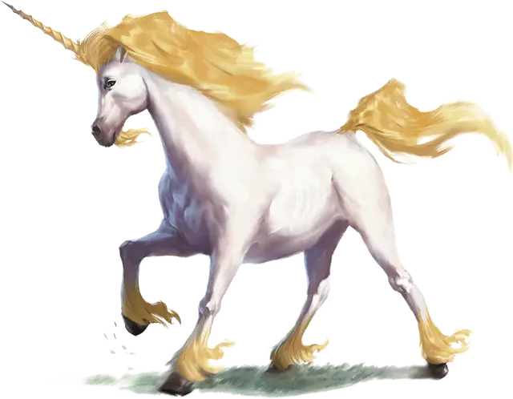

Единорог
Unicorn
Большой Небожитель, законно-добрый

Класс Доспеха 12
Хиты 67 (9к10 + 18)
Скорость 50 футов
| мод | спас | ||
|---|---|---|---|
| СИЛ | 18 | +4 | +4 |
| ЛОВ | 14 | +2 | +2 |
| ТЕЛ | 15 | +2 | +2 |
| мод | спас | ||
|---|---|---|---|
| ИНТ | 11 | +0 | +0 |
| МДР | 17 | +3 | +3 |
| ХАР | 16 | +3 | +3 |
Иммунитет к урону яд
Иммунитет к состояниям паралич, очарование, отравление
Чувства тёмное зрение 60 футов, пассивное Восприятие 13
Языки Небесный, Сильван, Эльфийский, Телепатия 60 фт.
Опасность 5 (1800 опыта)
Бонус мастерства +3
Среда обитания Лес
Особенности
Атака в броске. Если единорог переместится как минимум на 20 футов по прямой к цели, а затем в том же ходу попадет по ней атакой рогом, цель получает от атаки дополнительный колющий урон 9 (2к8). Если цель — существо, она должна преуспеть в спасброске Силы Сл 15, иначе будет сбита с ног.
Врождённое колдовство. Базовой характеристикой единорога является Харизма (Сл спасброска от заклинания 14). Единорог может накладывать следующие заклинания, не нуждаясь ни в каких компонентах:
• Неограниченно: бесследное передвижение [pass without trace], искусство друидов [druidcraft], обнаружение зла и добра [detect evil and good];
• 1/день каждое: опутывание [entangle], рассеивание зла и добра [dispel evil and good], умиротворение [calm emotions].
Сопротивление магии. Единорог совершает с преимуществом спасброски от заклинаний и прочих магических эффектов.
Магическое оружие. Атаки оружием единорога являются магическими.
Действия
Мультиатака. Единорог совершает две атаки: одну копытами, и одну рогом.
Копыта. Рукопашная атака оружием: +7 к попаданию, досягаемость 5 футов, одна цель. Попадание: Дробящий урон 11 (2к6+4).
Рог. Рукопашная атака оружием: +7 к попаданию, досягаемость 5 футов, одна цель. Попадание: Колющий урон 8 (1к8+4).
Целебное касание (3/день). Единорог касается другого существа своим рогом. Цель магическим образом восстанавливает 11 (2к8+2) хитов. Кроме того, это касание лечит все болезни и нейтрализует все яды, действующие на цель.
Телепортация (1/день). Единорог магическим образом телепортирует себя и до трёх согласных существ, которых он видит в пределах 5 футов от себя, вместе со всем несомым и носимым ими снаряжением, в место, известное единорогу, находящееся в пределах 1 мили.
Легендарные действия
Единорог может совершить 3 легендарных действия, выбирая из представленных ниже вариантов. За один раз можно использовать только одно легендарное действие, и только в конце хода другого существа. Единорог восстанавливает использованные легендарные действия в начале своего хода.
Копыта. Единорог совершает одну атаку копытами.
Мерцающий щит (стоит 2 действия). Единорог создает мерцающее магическое поле вокруг себя или другого существа, видимого в пределах 60 футов. Цель получает до конца следующего хода единорога бонус +2 к КД.
Самолечение (стоит 3 действия). Единорог магическим образом восстанавливает 11 (2к8 + 2) хитов.
Логово
Логово единорога может быть расположено в древних руинах, увитых плющом, на туманной поляне, в окружении могучих дубов, на покрытом цветами холме, покрытом живым ковром из бабочек, или где-либо ещё в таких же безмятежных лесных местах.
Местные эффекты
Измененные присутствием небожителя, владения единорога могут обладать любыми из следующих магических эффектов:
• Открытый огонь немагического происхождения тухнет во владениях единорога. Факелы и костры отказываются гореть, но закрытые фонари функционируют нормально.
• Существам, для которых владения единорога — родные места, легче здесь прятаться. Они совершают с преимуществом проверки Ловкости (Скрытность) для того, чтобы спрятаться.
• Когда существо с добрым мировоззрением накладывает заклинание или использует магический эффект, восстанавливающий хиты другого доброго существа, цель восстанавливает максимум возможных хитов для этого заклинания или эффекта.
• Проклятья, наложенные на существ с добрым мировоззрением, подавляются.
Если единорог умирает, эти эффекты немедленно завершаются.
Описание
Единороги обитают в зачарованных лесах. Не являющиеся родственниками лошадей, на которых они так похожи, белые и сияющие, как звезды, единороги — это небожители, оберегающие лесные царства.
Изо лба единорога растет один закрученный спиралью рог, прикосновение которого может лечить больных и раненых. Его уши ловят каждое слово и шепот существ, которые обитают в его владениях, и он знает языки эльфов и лесных народов. Единороги позволяют добрым существам входить в свой лес для охоты и сбора еды и всегда держат злодеев подальше. Злые существа редко покидают владения единорогов живыми.
Божественные охранники. Добрые божества отправляют единорогов на Материальный План, чтобы уберечь от зла, защитить и сохранить священные места. Большинство единорогов защищает определенную территорию, такую как зачарованный лес. Впрочем, боги иногда посылают единорогов охранять священные артефакты или защищать определенных существ. Когда силы тьмы преследуют кого-то, кого боги хотят защитить, они могут направить его в лес единорога, где злые существа найдут лишь свою погибель.
Единороги часто служат божествам лесов и дикой местности, включая богов добрых фей. Все единороги обладают природной способностью к врачеванию, но некоторым из них боги более благосклонны, и они способны творить чудеса, доступные обычно лишь высшим жрецам.
Владыки леса. Лес единорога — это святое царство, где под сенью древ ничто не пройдет незамеченным. Единорог слышит каждую ноту, спетую эльфами в кронах деревьев. Он чувствует, как гусеницы ворочаются в своих коконах, и как качаются листья и ветки, когда на них опускаются бабочки, чтобы дать отдых своим крыльям.
Лес единорога пронизан чувством спокойствия. Все, от волков и лис до птиц, белок и маленьких жуков, во владениях единорога, кажется, обрели покой. Пикси, спрайты, сатиры, дриады и другие обычно переменчивые феи, которые живут под сенью его леса, верно служат единорогу. Под защитой единорога существа ощущают себя в безопасности от угроз подкрадывающейся цивилизации и распространяющегося зла и коварства.
Единороги постоянно обходят свои владения, двигаясь осторожно, чтобы не потревожить других обитателей. Чужак может лишь краем глаза заметить это движение, чтобы, обернувшись, не увидеть ничего кроме диких лесов.
Священный рог. Рог единорога фокусирует его мощь, являясь частичкой божественной магии, заключенной в спиральной кости. Волшебные палочки из такого рога создают мощную магию, а удары рога единорога обладают божественной силой. Волшебники могут использовать истолченный рог единорога для создания мощных зелий, чернил для свитков и использовать его в качестве компонента для сверхъестественных ритуалов. Но любое существо, которое примет участие, хотя бы и самое малое, в убийстве единорога, весьма вероятно подвергнется божественной каре.
Благословенные скакуны. Когда тьма и зло угрожают захватить мир смертных, боги иногда считают уместным свести единорога с достойным наездником-героем. Паладин верхом на единороге является знаком прямого божественного вмешательства в дела мира смертных. Это священный союз, созданный, чтобы рубить головы демонам и изгонять дьяволов обратно в Девять Преисподних.
В опасные времена, когда тьма подступает все ближе, единорог остается со своим героем, а его рог сияет ярко, отгоняя ночь. Но если избранник богов отступает от своей благодати и отворачивается от дела добра, единорог покидает его, и никогда более не возвращается.